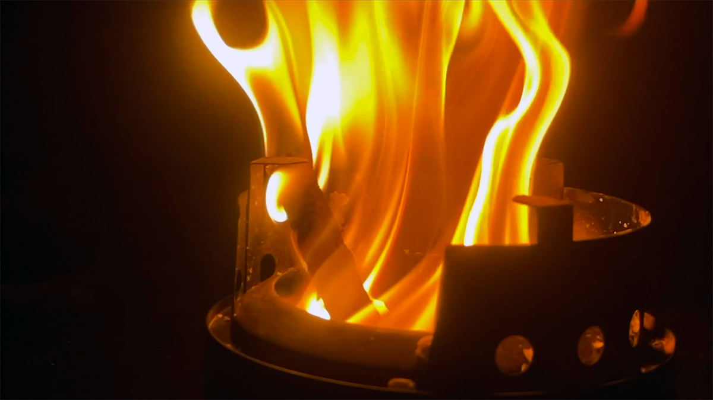
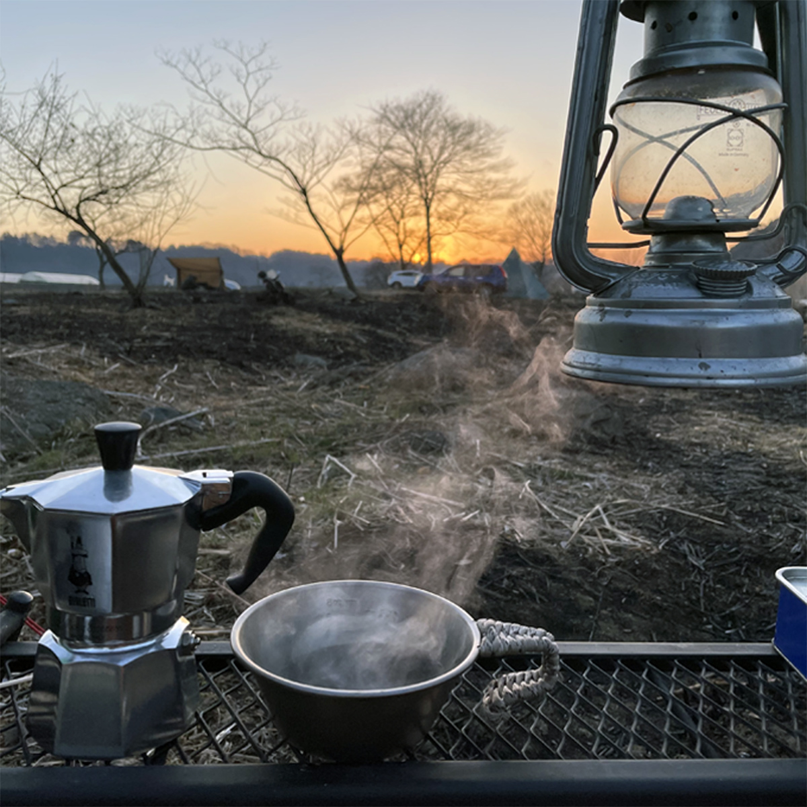
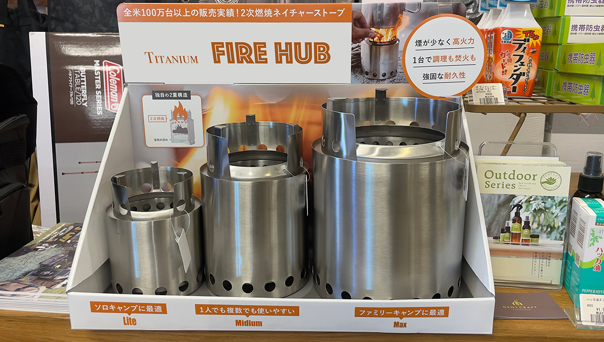
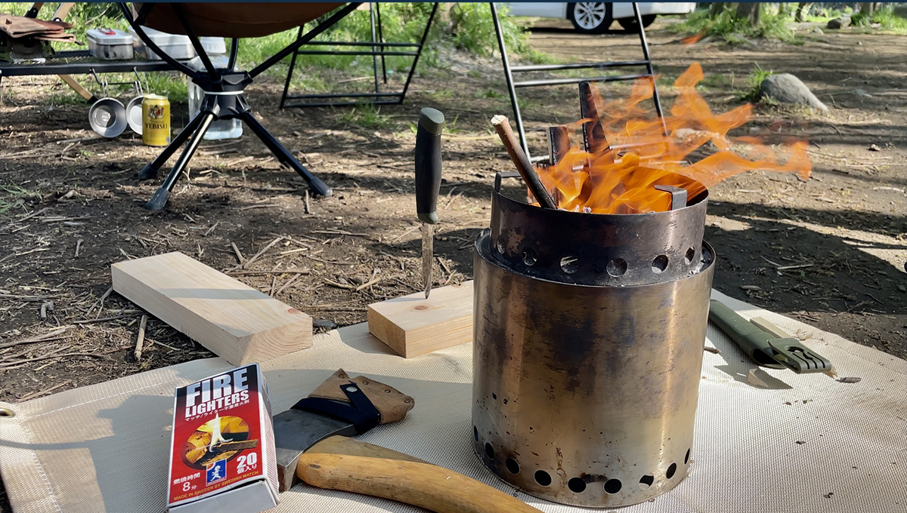
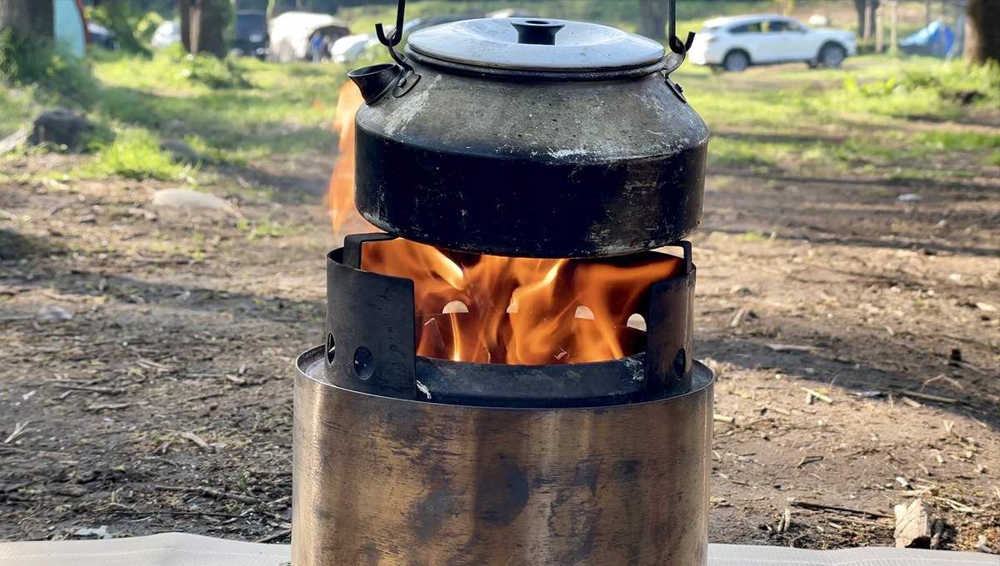

ファイヤーピットは、アウトドアでの焚き火を楽しむための道具です。庭やキャンプ場などで使われ、炭や薪を燃やすことができます。ファイヤーピットは、熱や炎を安全に扱うことができるように設計されており、周りに火の粉が飛び散ることを防止するためのフタや網も付いています。
また、デザイン性の高いものも多く、庭やテラスのインテリアとしても人気があります。
呼称としては、日本では「焚き火台」と呼ばれることが多いですが、英語では「ファイヤーピット」または「キャンプストーブ」と呼ばれます。

女子だってソロキャンプに憧れる！
朝日を眺めながらコーヒーを飲みたい

教えてKumao！
初心者キャンプのアドバイス (プロキャンパーKumao)
はじめてのソロキャンプ、一番したいことは何ですか？
「焚き火です！」
と答える初心者キャンパーさんは多いのではないでしょうか。
冬はもちろん、温かい季節でもキャンプに行ったら、焚き火は欠かせません。
ソロキャンプで、初めて焚火をする方に絶対に用意してもらいたい道具をご紹介します。
- 焚き火台
- 着火剤
- ガスターボライター
- 焚き火グローブ
- モーラナイフ
- トング
薪を地面に直接置いて焚き火する「直火」は、自然保護のため近年禁止されているキャンプ場がほとんどです。
焚き火台があれば直火禁止のキャンプ場でも、焚き火鑑賞や焚き火調理を楽しめるため、キャンプがより充実した時間になります。
初めてのソロ用焚き火台を買う方は、次の3つに分けて、自分に合った焚き火台を探しましょう。
- 交通手段に合わせて重量を選択
- 火床のサイズをチェック
- 耐荷重も要チェック
交通手段に合わせてサイズ、重量を選択してください。
車の場合…女性なら重さ3㎏までが理想
バイクの場合…重さ１㎏以下が理想
徒歩の場合…軽ければ軽いほどGood500g以下が理想
たとえ車で行くのだとしても、女性一人の場合では重いものは避けましょう。
一人で運んで、一人で組み立て、その後の作業を考えた場合、結論はなるべく軽いものが後々楽です。

いざソロキャンへ！
Kumao使用のファイヤーピット

Titanium FIRE HUB [Max]
特 徴
- 継ぎ目のない堅牢な構造による高い耐久性
- ２次燃焼を促し少ない燃料でも驚くほど効率よく燃焼
- 誰でも簡単に着火
- 煙が発生しにくい
| 使用サイズ | 直径約17.8×高さ約23.5cm |
|---|---|
| 重量 | 約998g |
| 材質 | ステンレススチール（SUS304）[チタン] |
| 付属品 | 本体、ゴトク、収納袋、日本語説明書 |

最新記事
{kind=link}
Kumao発信＝買って良かったおススメキャンプ道具ベスト10選
{kind=link}
夏のソロキャン穴場スポット
星空満点気分はメロー
Kumao発信＝夜景の綺麗なキャンプ場５選

マストバイ！
ウォータージャグにジャストフィットする3000円のミニチェア！
Kumaoです。コメント待ってます
道具について、キャンプについて、ぜひご意見やご感想を投稿してください！